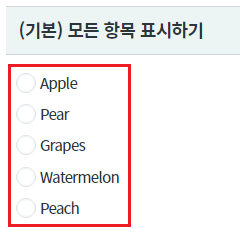
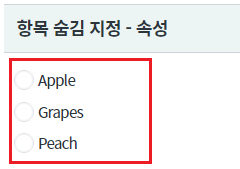
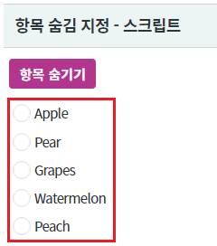
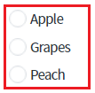
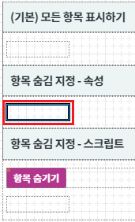
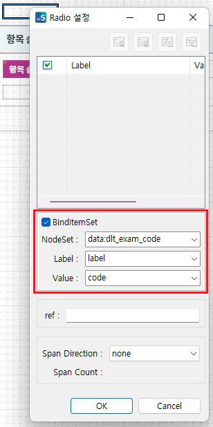
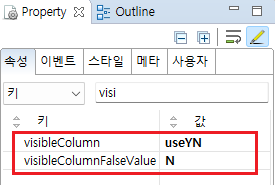
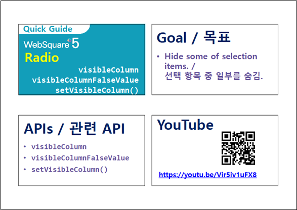

[Radio] 특정 항목 표시하지 않기
1개요
Radio의 특정 항목을 표시하지 않는 예제입니다. DataList와 Radio의 항목을 연결하여 설정할 수 있습니다.
2구현된 기능
모든 항목 표시
출력된 목록 중 특정 항목을 표시하지 않기 - 속성으로 설정
출력된 목록 중 특정 항목을 표시하지 않기 - 스크립트로 설정
3예제 테스트 방법
설정별로 구성된 컴포넌트의 목록은 하나의 DataList와 연결되어있습니다. 설정에 따라 출력된 목록을 비교합니다.
3.1모든 항목 표시
- 실행 결과를 확인합니다.
영역 [(기본) 모든 항목 표시하기]의 Radio를 확인합니다.
모든 항목이 출력(표시)되었습니다.
[브라우저(Chrome) 실행 예시]

3.2출력된 목록 중 특정 항목을 표시하지 않기 - 속성으로 설정
- 실행 결과를 확인합니다.
영역 [항목 숨김 지정 - 속성]의 Radio를 확인합니다.
항목 "Pear", "Watermelon"이 숨김 처리되었습니다.
[브라우저(Chrome) 실행 예시]

3.3출력된 목록 중 특정 항목을 표시하지 않기 - 스크립트로 설정
- STEP1. 출력된 목록을 확인합니다.
영역 [항목 숨김 지정 - 스크립트]의 Radio를 확인합니다.
모든 항목이 표시되었습니다.
[브라우저(Chrome) 실행 예시]

STEP2. 버튼 항목 숨기기를 클릭합니다.
- STEP3. 실행 결과를 확인합니다.
항목 "Pear", "Watermelon"이 표시되지 않습니다.
[브라우저(Chrome) 실행 예시]

4구현 예시
이 기능은 컴포넌의 목록이 DataList와 연결되어야 사용할 수 있는 기능입니다.
4.1[필수][공통]DataList 정의하기
컴포넌트의 목록과 연결할 DataList를 정의합니다.
DataList를 생성하고 ID를 dlt_exam_code로 할당합니다.
필수로 정의될 컬럼은 3가지로 아래와 같습니다. 컬럼의 ID는 환경에 맞게 정의할 수 있습니다.label : 화면에 출력할 레이블
code : 화면에 출력할 레이블의 값
useYN : 항목의 표시 여부 조건의 값
(visibleColumn 속성에 지정할 컬럼입니다. 이 컬럼의 값이 visibleColumnFalseValue 속성에 정의한 값과 동일한 경우 해당 항목은 숨겨집니다.)
그림 1.웹스퀘어5 SP5 스튜디오의 DataCollection 탭 예시

생성한 DataList에서 사용할 데이터를 할당합니다. 예제에서는 화면이 로딩된 시점(scwin.onpageload)에 데이터를 할당하고 있습니다.
숨길 항목은 useYN 컬럼에 N를 정의합니다.scwin.onpageload = function() { //DataList dlt_exam_code에 데이터 할당 dlt_exam_code.setJSON([ {"label":"Apple","code":"01","useYN":"Y"}, {"label":"Pear","code":"02","useYN":"N"}, {"label":"Grapes","code":"03","useYN":"Y"}, {"label":"Watermelon","code":"04","useYN":"N"}, {"label":"Peach","code":"05","useYN":"Y"} ]); };
4.2[필수][공통] 컴포넌트의 목록과 DataList 연결하기
스튜디오의 디자인 탭에서 컴포넌트를 더블 클릭하여 목록과 DataList를 연결합니다. (아래의 이미지를 참고하여 설정합니다)
그림 2.웹스퀘어5 SP5 스튜디오의 Design 탭 예시

그림 3.웹스퀘어5 SP5 스튜디오의 Design 탭 예시 - 목록과 DataList 연결하기

4.3컴포넌트에 숨길 항목 설정하기 - 속성
속성을 지정합니다.
[필수] visibleColumn="useYN" //DataList에 정의한 컬럼의 ID
[필수] visibleColumnFalseValue="N" //숨길 항목의 조건+ 값이 여러개인 경우 , 로 구분하여 정의합니다. 이 컬럼에 아무런 값을 정의하지 않은 경우 기본값은 0, false, FALSE, F 입니다.
그림 4.웹스퀘어5 SP5 스튜디오의 Property View(속성창) 예시

[소스 코드 예시]
<!-- radio의 소스 본문 예시 --> <xf:select1 visibleColumn="useYN" visibleColumnFalseValue="N" id="rad_exam2"> <xf:choices> <xf:itemset nodeset="data:dlt_exam_code"> <xf:label ref="label"></xf:label> <xf:value ref="code"></xf:value> </xf:itemset> </xf:choices> </xf:select1>
4.4컴포넌트에 숨길 항목 설정하기 - 스크립트
원하는 시점에 스크립트를 작성합니다.
[소스 코드 예시]
//예제 파일의 스크립트 "scwin.btn_ex1_onclick"에 작성되어 있습니다. //Radio [rad_exam3]의 숨길 항목의 컬럼과 조건값 설정 //항목 숨기기 컬럼 및 숨기기 값 설정 - 목록과 연결된 DataList의 "useYN" 컬럼의 값이 "N"인 경우 항목을 숨깁니다. rad_exam3.setVisibleColumn("useYN", "N"); //조건의 값이 여러개 인 경우 ,로 구분합니다. //목록과 연결된 DataList의 "useYN" 컬럼의 값이 "N" 또는 "Y" 인 경우 숨겨집니다. //rad_exam3.setVisibleColumn("useYN", "N,Y");
5주요 API
visibleColumn
visibleColumnFalseValue
setVisibleColumn( columnId , visibleColumnFalseValue )
6참고 문서
[웹스퀘어5 SP5 개발 가이드] Radio
링크 : https://docs1.inswave.com/sp5_user_guide/8df43d1f59fab704#b82f1edea4db4407
[웹스퀘어5 SP5 개발 가이드] Radio 일부 선택 항목 숨기기
링크 : https://docs1.inswave.com/sp5_user_guide/8df43d1f59fab704#a1d1c783c8135e21
7참고 동영상
Radio 일부 선택 항목 숨기기
링크 : https://youtu.be/Vir5iv1uFX8
